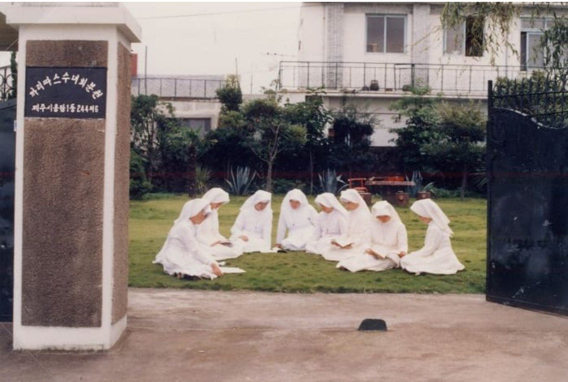

1신앙의 자리
옛 까리따스 수녀원 터
지금의 용담1동주민센터 자리
예수의 까리따스 수녀회 수녀님들이 머물던 수녀원이 있던 곳입니다. 이 수녀회는 1956년 한국에 들어온 뒤 본당 사목, 유치원 교육, 사회복지 활동으로 지역 교회와 이웃을 섬겨 왔습니다. 지금은 건물이 사라지고 주민센터가 들어섰지만, 용담동 신앙 공동체의 뿌리가 된 자리입니다.
걸으며 생각해 보기이 동네를 위해 조용히 기도하던 이들이 있었음을 기억하며 잠시 걸음을 멈춰 봅니다.